To implement the frequency dependencies of all common noise PSDs the following equation can be used.
| 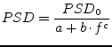 | (9.144) |
Where  is frequency and
is frequency and  ,
,  ,
,  are the parameters. The
following PSDs appear in electric devices.
are the parameters. The
following PSDs appear in electric devices.
| white noise (thermal noise, shot noise): | 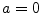, 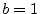, 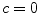 |
| pink noise (flicker noise): | , , 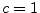 |
| Lorentzian PSD (generation-recombination noise): | 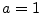, 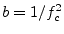, 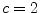 |
Noise current source with a current power spectral density of 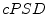:
 |
(9.145) |
The MNA matrix entries for DC and AC analysis are all zero.
The noise wave correlation matrix of a noise current source with current power spectral density and its S parameter matrix write as follows.
| 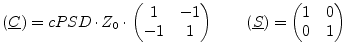 | (9.146) |
A noise voltage source (voltage power spectral density 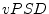) cannot
be modeled with the noise current matrix. That is why one has to use
a noise current source (current power spectral density )
connected to a gyrator (transimpedance  ) satisfying the equation
) satisfying the equation
| 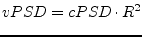 | (9.147) |
Figure 9.7 shows an example.
The MNA matrix entries of the above construct (gyrator ratio 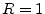) is similiar to a voltage source with zero voltage.
| 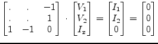 | (9.148) |
The appropriate noise current correlation matrix yields:
| 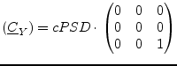 | (9.149) |
The noise wave correlation matrix of a noise voltage source with voltage power spectral density and its S parameter matrix write as follows.
| 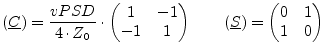 | (9.150) |
For two correlated noise current sources the (normalized) correlation
coefficient  must be known (with
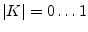). If the first
noise source has the current power spectral
density 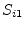 and is connected to node 1 and 2, and if furthermore
the second noise source has the spectral density 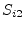 and is connected
to node 3 and 4, then the correlation matrix writes:
must be known (with
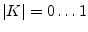). If the first
noise source has the current power spectral
density 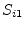 and is connected to node 1 and 2, and if furthermore
the second noise source has the spectral density 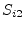 and is connected
to node 3 and 4, then the correlation matrix writes:
| 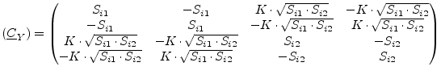 | (9.151) |
The MNA matrix entries for DC and AC analysis are all zero.
The noise wave correlation matrix of two correlated noise current
sources with current power spectral densities and
and correlation coefficient  writes as follows.
writes as follows.
| 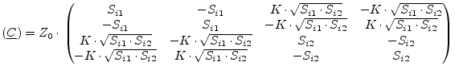 | (9.152) |
| 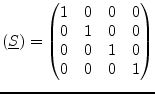 | (9.153) |
For two correlated noise voltage sources two extra rows and columns are needed in the MNA matrix:
| 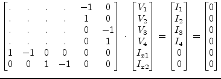 | (9.154) |
The appropriate noise current correlation matrix (with the noise
voltage power spectral densities 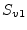 and 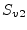 and the
correlation coefficient  ) yields:
) yields:
| 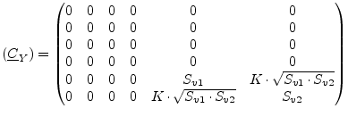 | (9.155) |
The noise wave correlation matrix of two correlated noise voltage
sources with voltage power spectral densities and
and correlation coefficient  and its S parameter matrix write as
follows.
and its S parameter matrix write as
follows.
| 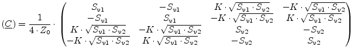 | (9.156) |
| 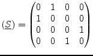 | (9.157) |
If a noise current source (ports 1 and 2) and a noise voltage source (ports 3 and 4) are correlated, the MNA matrix entries are as follows.
| 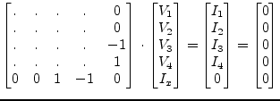 | (9.158) |
The appropriate noise current correlation matrix (with the noise
power spectral densities and and the
correlation coefficient  ) yields:
) yields:
| 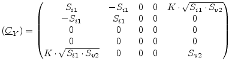 | (9.159) |
The noise wave correlation matrix of one correlated noise current
source and one noise voltage source with
correlation coefficient  writes as follows.
writes as follows.
 |
(9.160) |
| 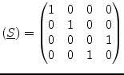 | (9.161) |